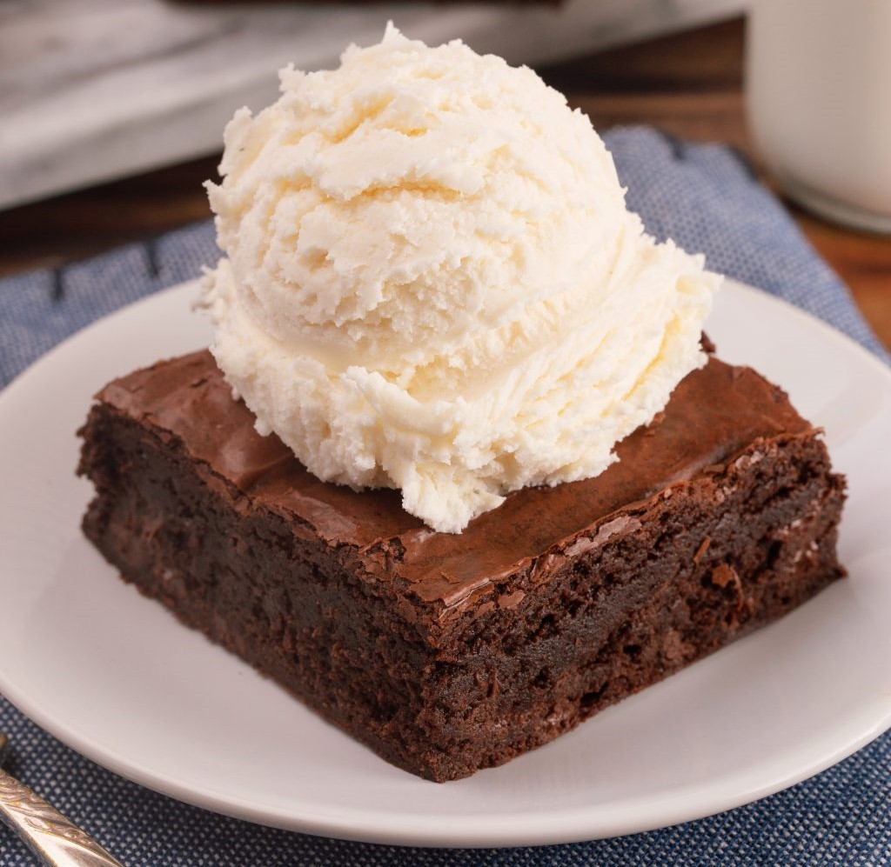

Breakfast swaps Greek yogurt → sour cream Keto-friendly toast → white bread Chia pudding → sugary yogurt Explore breakfast
Entree swaps Cauliflower rice → white rice Zucchini noodles → pasta Chickpeas → ground meat Explore entrees
 Dessert swaps Avocado mousse → heavy cream mousse Banana “nice” cream → ice cream Chia pudding → custard Explore desserts